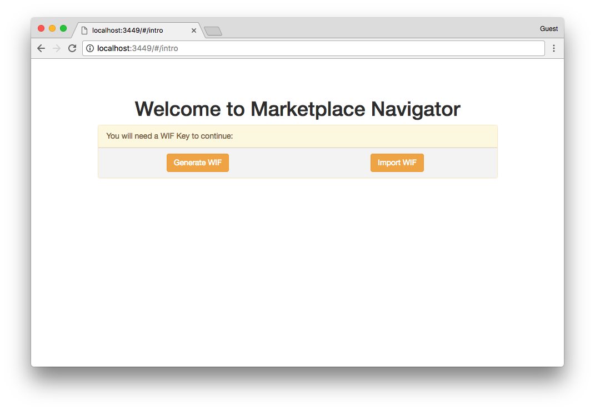
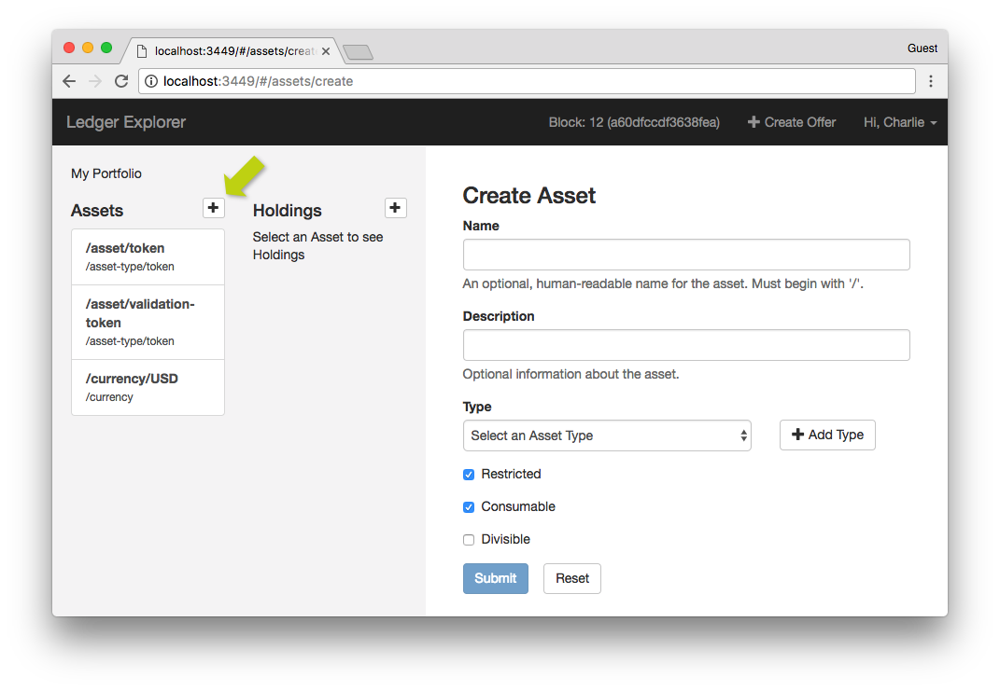
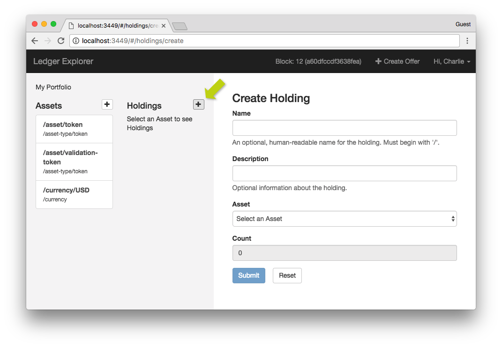
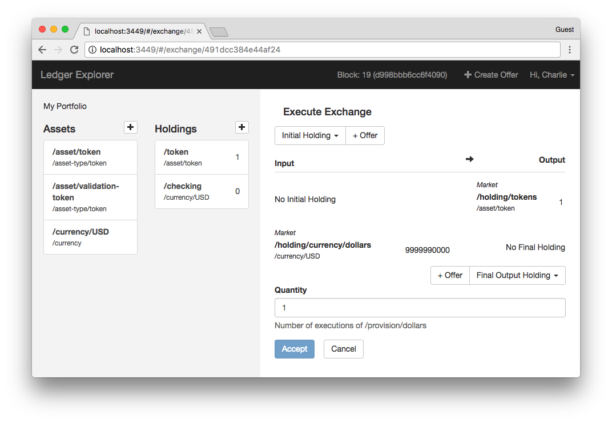
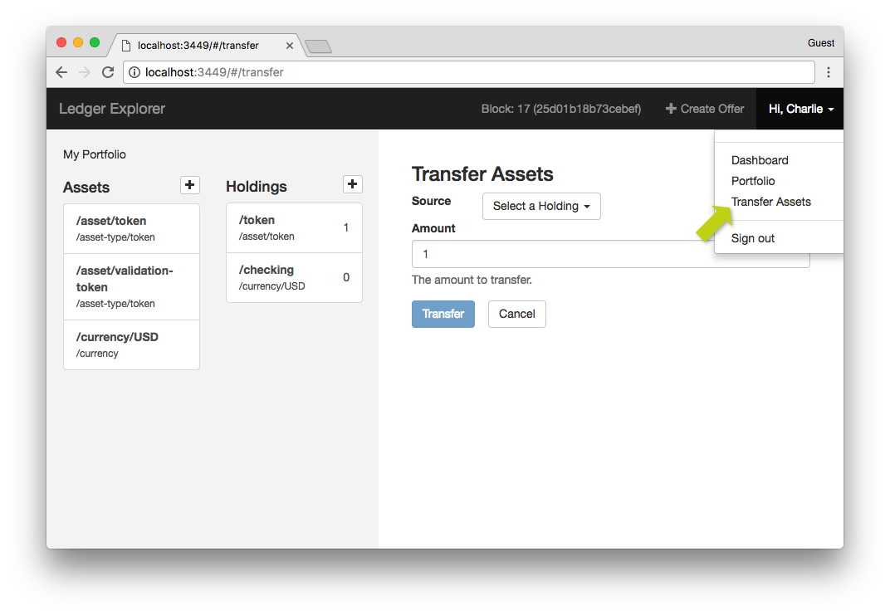

Tutorial¶
Overview¶
Marketplace Navigator is a browser-based GUI designed to be used with the Sawtooth Lake Marketplace transaction family. It allows users to easily register Participants, create and exchange Assets and Holdings, and even view the current state of the blockchain.
Before You Begin¶
This guide covers the use of the Navigator UI, not the initial setup, or the intricacies of running your own validators. For developers running these systems for the first time, begin with the CLI tutorial, and refer to the the readme files in the /navigator directory.
Creating a Participant¶
The first time you sign into Marketplace Navigator you will be prompted to either create or import a “Wallet Import Format” (WIF) key. This is a unique cryptographic string used by the blockchain to authorize transactions, as well as by Marketplace Navigator to confirm your identity and sign you in.
Note
Beware! It is not possible to change or recover this key if it is lost!
Creating a Participant with a New Key¶
To create a Participant with a new WIF key:
Open Marketplace Navigator in your browser, or sign out of Marketplace Navigator if already signed in. You should see this screen:
Click Generate WIF, and a key will be generated and saved to your browser’s local storage.
Before proceeding to account creation, you must save the generated key by:
- Clicking Download Key to download the key in a text file.
- Or by clicking Copy Key to Clipboad to copy the key, which can then be pasted wherever you would like it to be saved.
Click Create Participant.
Enter a Name for yourself.
(Optional) Enter a Description.
Click Submit.
Note
Participants’ names must be unique. If you encounter a server error at this point, it could be caused by using a name that has already been taken.
- If participant creation was successful the provisioning screen should appear:
- After several minutes, the participant is fully provisioned, and you will be brought to the user dashboard:
Creating a Participant with an Existing Key¶
Note that this is not the same as Signing in an Existing Participant, which is described below. If you have previously generated a WIF key you would like to use in creating a new participant, follow these steps:
- Open Marketplace Navigator as described above.
- Click Import WIF.
- Input your WIF key by:
- Pasting the key into the text box labeled “Paste WIF key”.
- Or by clicking Uploade WIF File, to upload the ”.wif” file Marketplace Navigator originally generated, or any plain text file which contains only the WIF key you wish to upload.
- Click Submit.
- Fill in participant info following the same directions described above (steps 5-7).
Signing in an Existing Participant¶
You can sign in an existing account to Marketplace Navigator using a similar process to Creating a Participant with an Existing Key described above. All you need is your WIF key.
- Open Marketplace Navigator.
- Click Import WIF.
- Input your WIF key by:
- Pasting the key into the text box labeled “Paste WIF key”.
- Or clicking Uploade WIF File, to upload the ”.wif” file Marketplace Navigator originally generated, or any plain text file which contains only the WIF key you wish to upload.
- Click Submit, and you will be taken to the user dashboard.
Note
Beyond this point, the directions all assume you are successfully signed in.
Creating an Asset¶
Assets are types of goods which can be exchanged on the marketplace. They can include anything from US Dollars, to barrels of oil, to cookies. Assets are further organized into AssetTypes, such as currency or baked goods. Any participant can create new assets and types, and many kinds of markets to be approximated.
From the user dashboard, click on the + button to the right of the “Assets” heading:
Enter a Name for the asset. Like most names in Marketplace, it must begin with a “/” character, and generally follows a naming convention similar to a computer directory. For example: “/currency/usd”. This field can be left blank, but that will generate a long randomized identifier, and is generally not recommended.
(Optional) Enter a Description.
Enter a Type by either:
Selecting an existing asset type from the dropdown menu.
Or by using the following directions to create a new asset type:
- Click Add Type.
- In the pop-up that appears, Enter a Name. (the same naming rules apply).
- (Optional) Enter a Desciption.
- Select whether or not this asset type should be “restricted”. If selected, only the participant who created the type will be able to create new assets with it.
Note
You may click Discard to close the Add Type pop up.
Use the checkboxes at the bottom to choose which options should apply to this asset:
- Restricted - Only the creating participant will be able to create new Holdings of this asset with quantities greater than zero.
- Consumable - When spent, this asset is consumed. If disabled, it is effectively infinite.
- Divisible - This asset can exist in fractional form. In other words, it will be possible to exchange half of one (or less).
Click Submit.
Creating a Holding¶
Holdings are containers where actual quantities of specific Assets are held. Each may only hold one kind of asset, and in order to execute Exchanges, participants must have holdings in both the assets they are providing and receiving.
From the user dashboard, click on the + button to the right of the “Holdings” heading:
Enter a Name for the holding. Once again the name must begin with a “/”, and generally follows a convention similar to computer directories, such as “/accounts/checking”. If left blank, a random identifier will be generated for the holding.
(Optional) Enter a Description.
Select an Asset from the dropdown menu.
Enter a Count for your holding.
Note
If you are not the creator of the asset, and that asset is “restricted”, you can still create holdings for it, but you must enter a count of zero.
Click Submit.
Creating an Offer¶
Offers are open offers of exchange, which any participant or multiple participants can accept. In order to create an offer you must have Holdings in both the Asset you are providing and the one you expect to receive in return, though the latter can be empty (i.e. have a count of zero).
Click on the Create Offer button in the top right of your screen.
Enter a Name for the offer. Once again the name must begin with a “/”, and generally follows a convention similar to computer directories, such as “/orders/cookies”. If left blank, a random identifier will be generated for the holding.
(Optional) Enter a Description.
Select the Input holding from the dropdown. This is where payments you receive will go, and those payments will be of the kind of asset in the holding.
Enter the Amount of input asset you expect to receive.
Select an Output holding from the dropdown. This is where the payouts you are offering will come from.
Enter an Amount for the output asset.
Note
Using the Amount fields, you are actually creating an exchange ratio, not a fixed sum. So setting amounts of 50 and 100 is equivalent to 5 and 10, 1 and 2, and so on. There is currently no way to create a fixed indivisible package like “$10 for half a dozen cookies”.
Enter a Minimum. This is the lowest quantity of the input asset that can be used to fulfill the offer.
Enter a Maximum, the highest quantity of an input that can be used.
Select how repeatable the offer should be:
- Any - the offer can be fulfilled an unlimited number of times (or until the output holding is empty).
- Execute Once - it is a one time offer, and will close after being fulfilled once.
- Execute Once per Participant - Each participant in the marketplace may fulfill the offer once.
Click Submit.
Accepting an Offer¶
In order to accept an offer made by another participant, you must have Holdings for both the Asset you need to pay with, and the asset you expect to receive in return, though it is possible to create the latter as part of the exchange process.
From the user dashboard, click on Latest Open Offers.
From the list that appears, click the Accept button next to the offer you wish to accept. This will bring up the “Execute Exchange” screen:
Select the Initial Holding you would like to pull assets from to fulfill this offer.
Select the Final Output Holding where you would like to keep the assets you receive.
Note
If you would like to store the received assets in a new holding, select New Holding from the dropdown, and enter the name of the holding into the text field that appears. As usual, this name must begin with a “/”.
Enter the Quantity of exchanges you would like to execute.
Note
In this case, Quantity refers not to the count of either asset being transfered, but to the smallest integer expression of the exchange ratio the offer was originally set at. For example, if the offer was originally an 80:100 exchange, the smallest integer expression would be 4:5. So a Quantity of 1 would payout 4 of the input, and receive back 5 of the output.
Click Accept.
Chaining Offers (Arbitrage)¶
It is possible to chain together multiple offers using the + Offer buttons next to the initial holding and final holding dropdowns. This allows you to build a chain of exchanges which can include assets you have no Holdings in. For example, it is possible to trade US Dollars for Euros for some authentic Italian biscotti, even though you have no holding of Euros.
- Click on either + Offer button, to bring up a dropdown of any available offers with the appropriate asset types.
- Select an offer from the list to add it to the chain.
- The initial + Offer adds offers to the beginning, and the latter adds them to the end.
- After being added, an offer can be removed from the beginning or end with the - Offer button that appears.
Transfering Assets Directly¶
It is possible to transfer quantities of Assets directly from one Holding to another directly without creating and accepting offers. The transfer can be internal, sent to another holding you control, like sending USD from your checking to your savings, or external, like a money transfer to a Nigerian prince. The transfers are one way, and always originate from a holding you control.
Click on your name in the upper right corner of the screen.
Select Transfer Assets from the dropdown that appears:
From the Source dropdown, select a holding for the assets to originate from.
Select a Participant to whom you wish to transfer the asset. The default of Self will transfer assets between your own holdings.
Select a Destination holding from the final dropdown. It will display only holdings that match the kind of asset being transfered and belong to the participant selected.
Enter the Amount you would like to transfer.
Click Transfer.